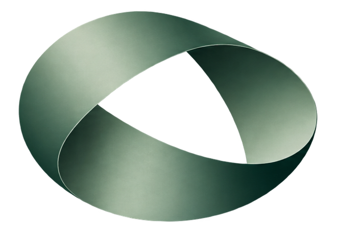

RESEARCHOS / AI RESEARCH SOFTWARE
Explore more ideas. Build better models.Put what you learn to work in the next experiment.
TRAVELER 01 / SURFACE CAMERA
Six legs. One continuous journey.
CREATING A CONTINUOUS WORLD
Please open this file in a current Chrome, Edge, Firefox or Safari browser with hardware acceleration enabled.
RECURION / MOTION LAB
The ribbon has one half-twist. Ants walk on its surface rather than orbiting in space. Follow one: after a circuit it arrives on the opposite local face, without ever crossing an edge.
For a fixed lane, two circuits return to the original point and orientation. The colony also makes small lateral adjustments to maintain separation. Each ant has an articulated six-leg gait, surface-aligned body, and fading signal trail.
Ants travel through 0 ≤ u < 4π on the double cover. The body follows the surface tangent and normal. The two-turn period keeps orientation continuous across the twist.
This is procedural locomotion with lightweight local separation—not an N-body galaxy simulation or a model of biological ant intelligence. The trails are visual traces, not a claim of machine learning.
Drag to orbit. Scroll or pinch to zoom.Reduced-motion preferences start the scene paused.